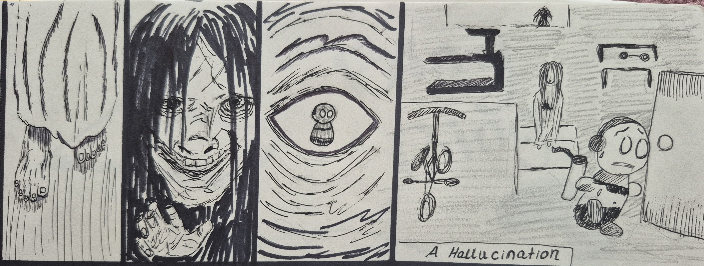
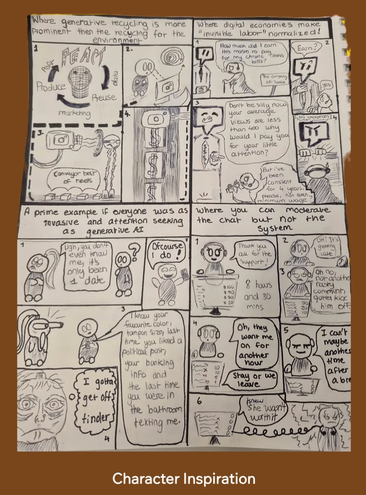
Comic Project
This comic explores storytelling through a blend of abstraction and realism, drawing from personal experiences during my transition into university. Rather than presenting a linear narrative, the project focuses on emotion, perception, and the way internal experiences can shape how reality is interpreted.
My original characters have been a constant part of my work since high school. Their exaggerated, expressive features allow me to communicate emotion in a way that feels both playful and honest.
As I transitioned into university, these characters evolved alongside me, taking on more emotional depth and complexity. They became a way to process and express personal experiences through visual storytelling.
The sketch shown highlights this approach, using humor to explore darker themes, such as the growing presence of AI. Humor acts as a coping mechanism throughout my work, softening heavier ideas while still allowing them to be felt.
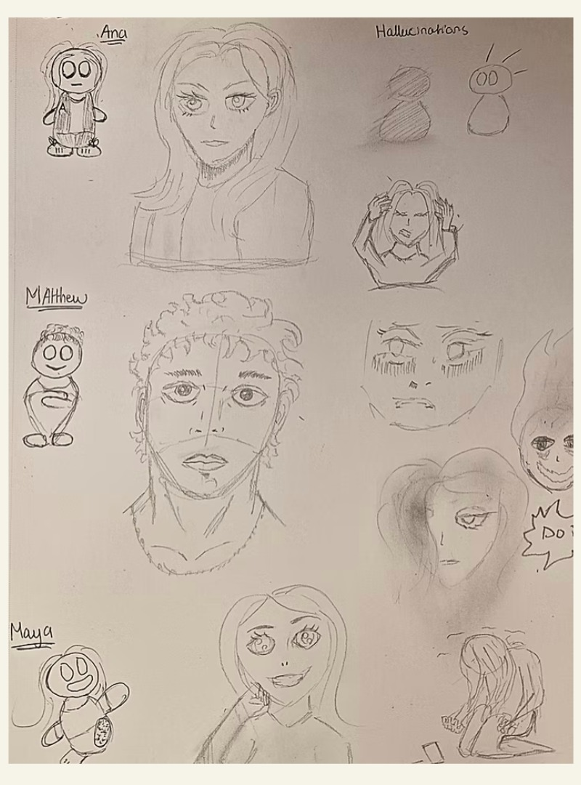
The Challenge
Telling a story about hallucinations presents a unique challenge, as it requires translating experiences that are not visible to others into a visual narrative. To address this, I explored a contrast between abstraction and realism.
Abstract, exaggeratedcharacters are used to introduce humor into darker moments, while more realistic depictions are reserved for moments of fear and intensity. This intentional reversal of what feels “real” and “unreal” creates a sense of disorientation, allowing the audience to better empathize with the experience.
As a result, the project features a range of characters, from more realistic anatomy to playful, cartoon-like forms, reflecting the shifting perception throughout the story.
The 6 Iterations
Another challenge was representing how hallucinations begin. They often start subtly through unfamiliar silhouettes in shadows, sounds that feel real but are not shared, or faces emerging from shapes and darkness.
To translate this visually, I explored an iterative drawing process that begins with loose scribbles. From these abstract marks, forms and faces gradually emerge, mirroring how the mind naturally begins to interpret and construct images that are not truly there.
This approach allowed the creation process itself to reflect the experience of hallucination, where meaning slowly forms out of ambiguity.
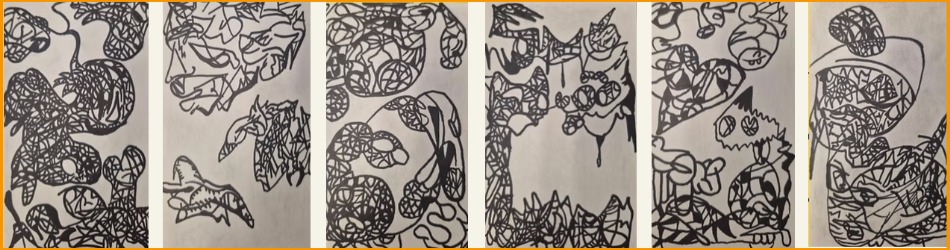
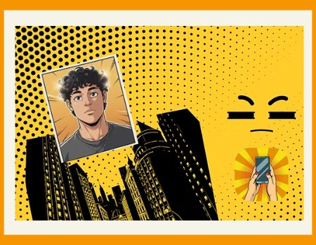
Exploration with Adobe Express
An additonal key exploration was the visual style of the story, which led me to present it as a comic. This allowed me to use exaggerated facial expressions, strong line work, and structured elements such as text bubbles and gutters to guide the narrative.
I explored background techniques like dot patterns and pointillism to reflect moments of intensity and stress, while expressive line work was used to emphasize emotion in the character representing myself. The scale and composition of each scene were also adjusted to convey either stillness or sudden action.
Adobe tools supported this process by allowing me to experiment with digital elements and build a cohesive visual language through digital collages and composition.
Final Outcome
To capture the realism of the hallucinations, I focused on close-up facial imagery, particularly unsettling expressions such as exaggerated smiles and distorted features. I referenced films like The Ring and Smile, and used
Adobe Firefly to generate visual references that combined elements from both characters such as ragged textures, exaggerated eyes, and unnatural facial expressions which I then translated into my own sketches.
Prompt: I need a scary woman combined with these 2 photos with the scary woman smiling
In the final pages of the story, I intentionally reduced visual detail to reflect a shift toward relief and hope. However, based on feedback, I recognized that this approach limited the emotional depth of the ending. With more time, I would refine these final pages by introducing additional detail to better balance clarity and emotion.
Despite this, I would maintain the open-ended conclusion. The story reflects an ongoing personal journey, and leaving the ending unresolved allows space for continued growth and interpretation.
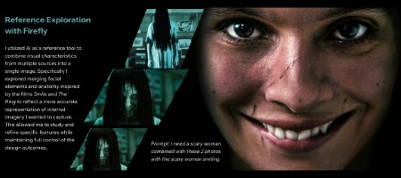
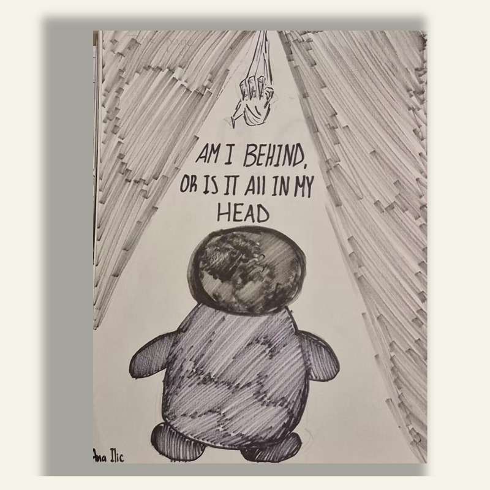
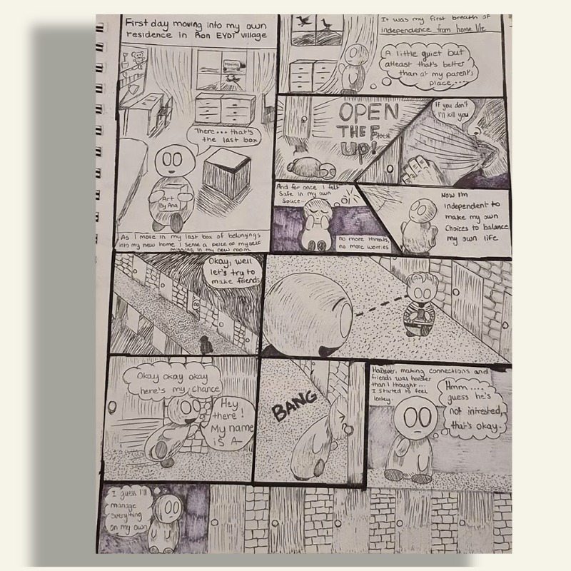
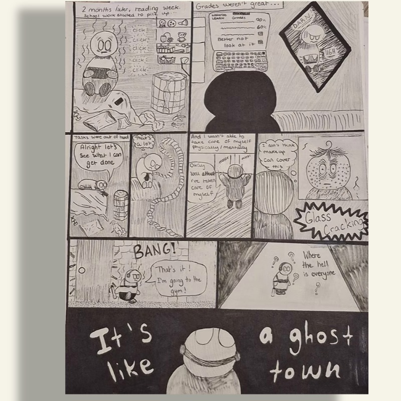
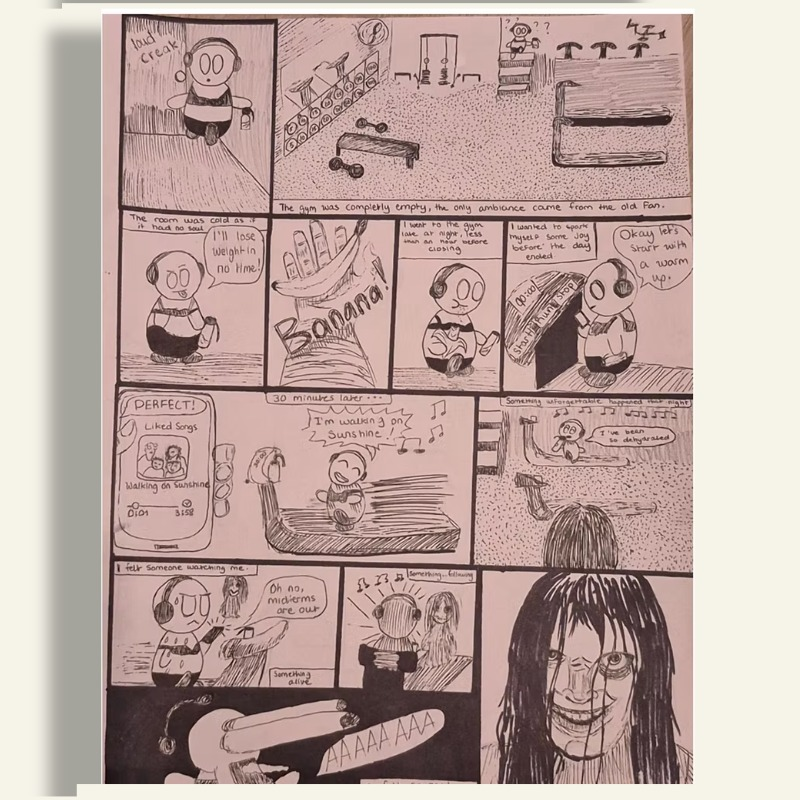
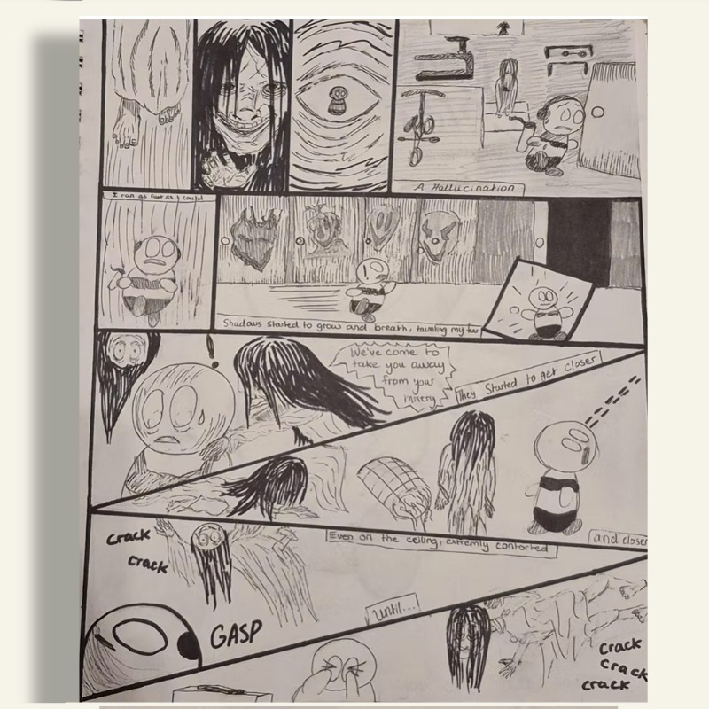
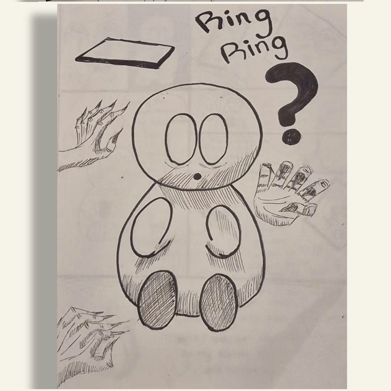
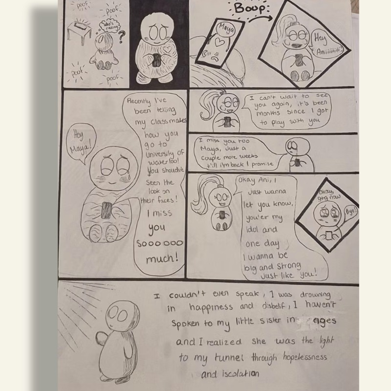
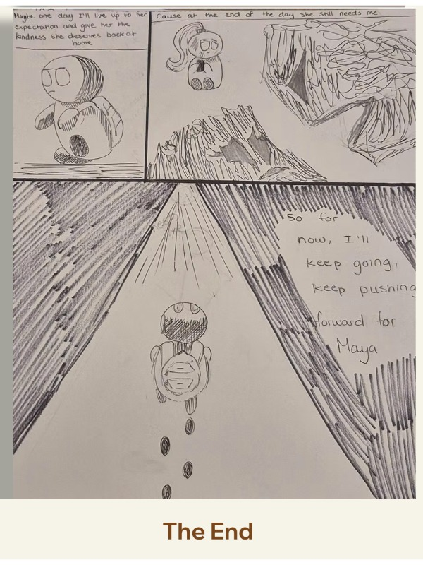
Want to explore more? View full project breakdowns and extended work below.